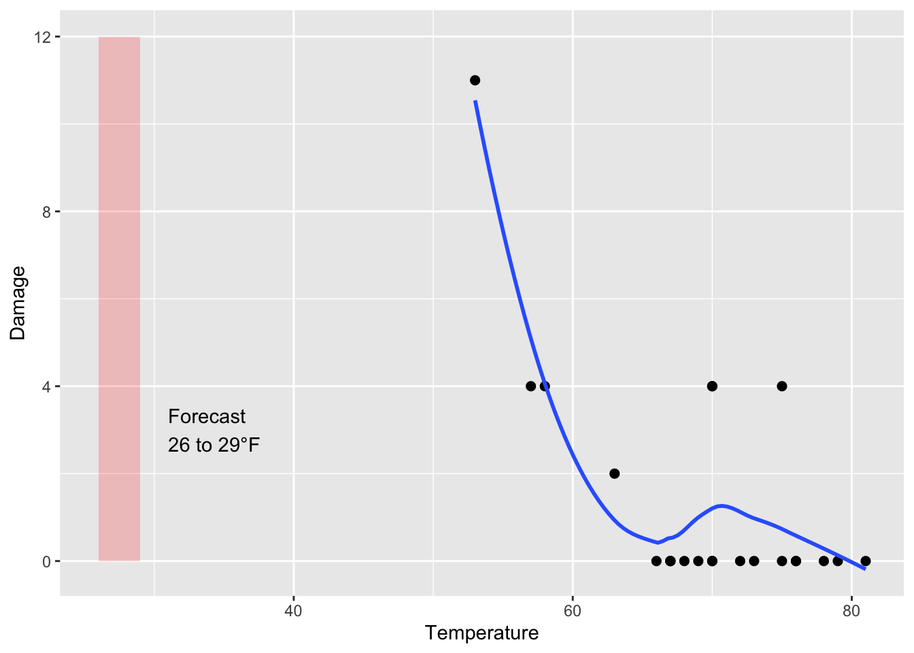
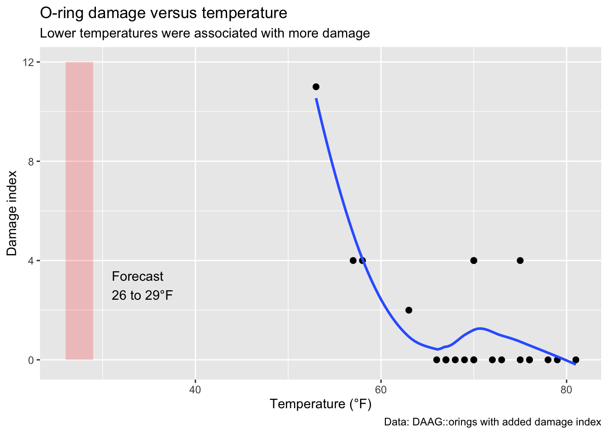
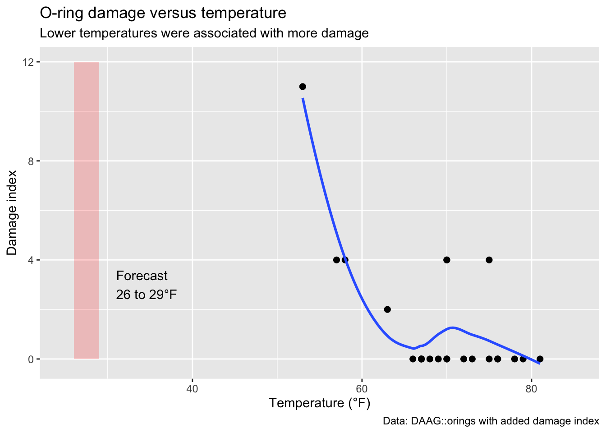
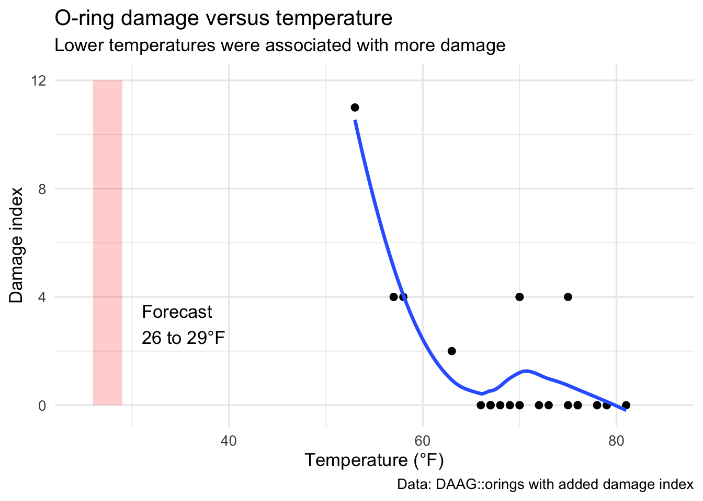

A layer-by-layer walkthrough with the Challenger O-ring example
Purpose
This document is designed for teaching ggplot2 by building a plot one stage at a time.
The goal is not just to produce a final figure, but to show students how a ggplot is assembled from distinct components:
data
aesthetic mappings
geometric layers
statistical layers
annotations
labels
theme elements
We will use the Challenger O-ring example because it is a classic case in data visualization: the relationship between temperature and damage becomes much easier to see once the data are plotted.
Load packages and data
We will use the orings data from the DAAG package and add a damage index used in many retellings of this example.
p7 <- p6 +annotate("text",x =31,y =3,label ="Forecast\n26 to 29°F",hjust =0)p7

This makes the figure more explanatory and less dependent on narration.
Step 10: Add labels
Now add titles and axis labels.
p8 <- p7 +labs(title ="O-ring damage versus temperature",subtitle ="Lower temperatures were associated with more damage",x ="Temperature (°F)",y ="Damage index",caption ="Data: DAAG::orings with added damage index")p8

This is a good stage to discuss how labels shape interpretation.
Step 11: Adjust the x-axis range
To focus attention on the forecast range and the observed temperatures, we can control the axis limits.
p9 <- p8 +xlim(25, 85)p9

Now the visual framing better supports the point of the graph.
Step 12: Apply a theme
Themes control non-data ink: the background, grid lines, text styling, and related elements.
p10 <- p9 +theme_minimal(base_size =13)p10
At this stage we have a polished plot assembled step by step.
Step 13: Show the whole build in one block
After walking through each stage explicitly, it is useful to show the full code in one place.
ggplot(oring, aes(x = Temperature, y = Damage)) +geom_point(size =2) +stat_smooth(method ="loess", se =FALSE) +annotate("rect",xmin =26, xmax =29,ymin =0, ymax =12,alpha =0.2,fill ="red" ) +annotate("text",x =31,y =3,label ="Forecast\n26 to 29°F",hjust =0 ) +labs(title ="O-ring damage versus temperature",subtitle ="Lower temperatures were associated with more damage",x ="Temperature (°F)",y ="Damage index",caption ="Data: DAAG::orings with added damage index" ) +xlim(25, 85) +theme_minimal(base_size =13)

Summary: what are the components?
The final plot contains:
Data: oring
Mappings: aes(x = Temperature, y = Damage)
Geom layer: geom_point()
Statistical layer: stat_smooth()
Annotations: annotate("rect", ...) and annotate("text", ...)
Labels: labs(...)
Scale control: xlim(25, 85)
Theme: theme_minimal()
A useful mental model
One helpful way to describe ggplot2 is:
Start with data and mappings, then add layers that display, summarize, and explain the data.
That suggests a sequence of questions students can ask:
What data am I using?
Which variables belong on the axes?
What geom should represent the observations?
Do I want a statistical summary?
Do I need annotations?
What labels will help the viewer?
What theme or formatting best supports the message?
Optional student exercise
Modify the final plot in one way:
change the theme
change point size
add a color mapping
remove the smoother
rewrite the title and subtitle
move the annotation text
Then explain whether the change improves the figure and why.